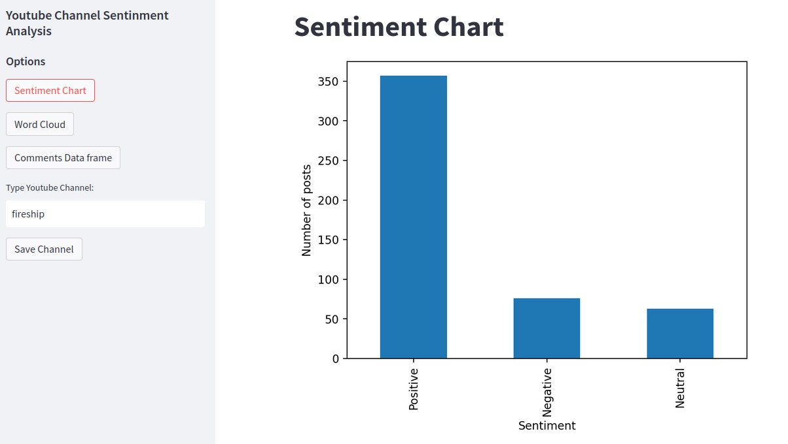
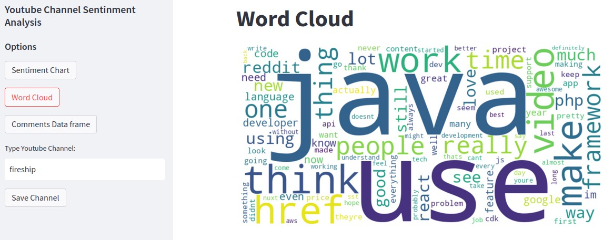
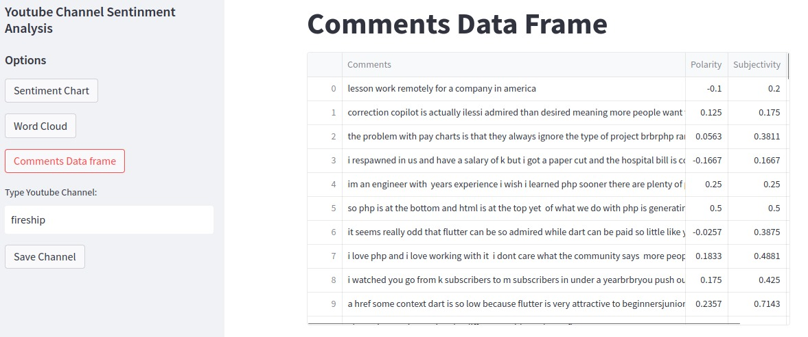

IBM Capstone Data Engineering Project
Overview
This project explored several data engineering technologies, concepts and skills that I acquired during my time taking the IBM Data Engineering Professional Certificate. You can find all the screenshots and scripts pertaining to this project on GitHub.
Data Platform Architecture and OLTP Database
PostgreSQL Data Warehouse
Data Analytics and IBM Cognos Dashboards
ETL & Data Pipeline (Airflow, Python and Bash)
Big Data Analytics with PySpark
And then it generates a bar graph about the polarity of the comments. They can be neutral, positive or negative.
A word cloud with the words most frequently used in the comments.
And the original dataframe with all the comments and their respective polarity, subjectivity and classifications.
Technologies used
- YouTube API: Integrated the YouTube API to retrieve channel information, video data, and comments from YouTube. This involved authenticating the API requests and handling the API responses.
- Streamlit: Utilized Streamlit, a web application framework, to create an interactive dashboard for the sentiment analysis tool. Developed user interface components, such as text inputs, buttons, and data visualizations, to enhance user experience.
- Flask: Implemented a backend API using Flask, a micro web framework, to handle data processing tasks. The API received requests from the frontend, processed the data using TextBlob for sentiment analysis, and returned the results to the frontend.Third Item
- Docker: Employed Docker for containerization, enabling easy deployment and scalability of the application. Created Docker images for the frontend, backend, and data processing components, allowing them to run independently and communicate with each other through defined interfaces.
- TextBlob: Utilized the TextBlob library, a powerful NLP tool in Python, for sentiment analysis of the extracted comments. Performed sentiment classification on the comments to determine their polarity (positive, negative, or neutral) and subjectivity.